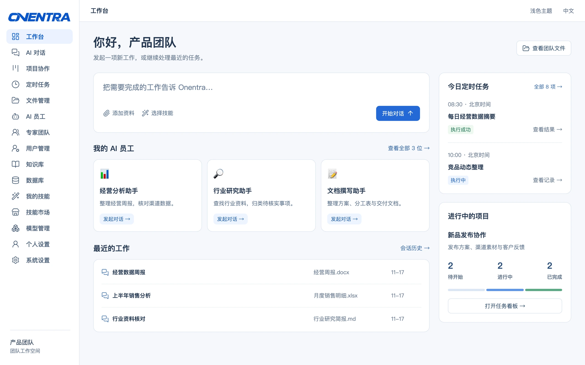

技术理解扎实
有模型部署、推理优化与 Agent 开发经历，能和研发一起判断效果、响应速度与实现成本。
岚图汽车 · Agent 开发实习
在固定测试条件下，解码速度从 48.72 提升到 96.35 tokens/s。
个人优势
华中科技大学计算机硕士在读 · 本科人工智能。做过产品从 0 到 1，也亲自参与模型与 Agent 开发。
有模型部署、推理优化与 Agent 开发经历，能和研发一起判断效果、响应速度与实现成本。
在固定测试条件下，解码速度从 48.72 提升到 96.35 tokens/s。
主导 Wanso 的竞品分析、需求、原型与内测，把“外卖比价”收敛成先选餐、再选平台的完整体验。
三轮内测，用户满意度从 72% 提升到 88%。
愿意听用户怎么选、哪里卡住，也能把问题讲成开发可以实现、测试可以复现的要求，持续跟进交付。
与安卓开发和内测用户共同迭代，参与双端联调与异常用例回归。
既做面向消费者的选餐助手，也做面向企业的 AI 工作平台，关注真实任务是否完成、结果能否检查与继续使用。
从 Wanso 的预算校验，到 ONENTRA 的数据溯源和可编辑文档交付。
项目作品
选餐助手与 AI 工作平台：先了解我为什么这样做，再打开产品验证它如何工作。
 移动应用
移动应用

桌面网页产品文档
用需求节选说明我如何定义范围、处理异常，以及判断一次迭代是否有效。
怎样让一个有预算、有忌口的人，在午休时决定吃什么、去哪点？我将选餐与平台比价拆成两个连续决策。
将模型、技能与业务资料放进一个工作入口，让任务从提出需求走到可核对、可编辑的结果。
需求节选 · 随项目迭代更新
面向在胡志明市选择外卖的上班族与学生。用户需要同时考虑口味、预算和平台费用。首期目标是帮助用户形成一个有依据的选餐决定，并顺利转到平台核实和下单。
首期覆盖需求输入、推荐候选、连续追问、费用解释与平台跳转。支付由外部平台完成。订单回传、成交归因和商家抽佣需要平台数据支持，属于下一阶段验证。
| 场景 | 通过条件 |
|---|---|
| 日常爱吃鸡，本次说“不吃鸡” | 本次禁忌覆盖历史偏好，推荐卡与理由一致。 |
| 两个人，总预算 120,000 ₫ | 明确是总预算；费用按两份计算，配送费单独说明。 |
| 候选只有店名，没有价格 | 标记待核实，不能直接宣称“符合预算”。 |
| 保留汉堡，把饮料换成水 | 继承上一轮选择，重新计算变更后的餐费。 |
用选店任务验证完成率，用逐条规则核对约束满足率。三轮内测各收集 50 份问卷，将 4–5 分计入满意；结果不外推为真实成交转化率。
当前网页演示：A100 模型真实回答，使用已采集的两家菜单，支持追问、收藏和平台跳转；价格与可售状态以平台为准。
需求节选 · 随项目迭代更新
面向需要撰写报告、核对经营数据和交付办公文件的业务人员。问题来自资料分散、模型缺乏上下文，以及工具执行与最终结果难以核对。
先打通经营周报、行业研究与方案起草中的通用流程。把自定义模型、资料引用、只读数据库查询和可编辑文件交付连接起来；效率提升需用对照任务测量。
| 场景 | 通过条件 |
|---|---|
| 输入一半后去知识库选择笔记 | 返回保留原草稿；引用标签可见且可移除。 |
| 工具执行超过一个交互周期 | 显示当前阶段；详情可折叠，不能提前宣布完成。 |
| 用户要求 Excel 和正文结论 | 文件可打开、公式可复算，正文回答明确要求的指标。 |
| 删除会话或文件 | 先提示删除后不可恢复；确认后执行，取消则保留。 |
分别验证资料链路与文件链路，再做端到端任务。经营周报用独立 SQL、回复正文和工作簿三方对照。正文漏写指标时，文件正确也不能记为完全通过。
当前公开版支持资源配置、对话与办公文件生成；案例展示实测证据。30 项人工与平台对照测试仍是后续计划，不能当作已取得的效率结果。